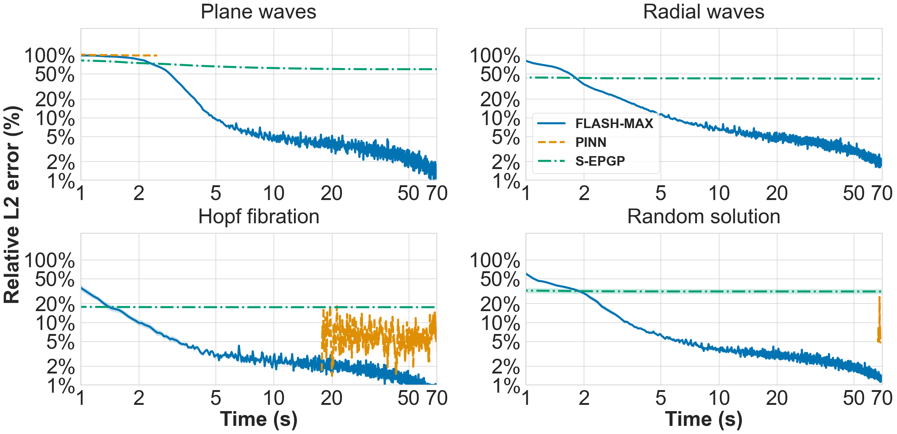
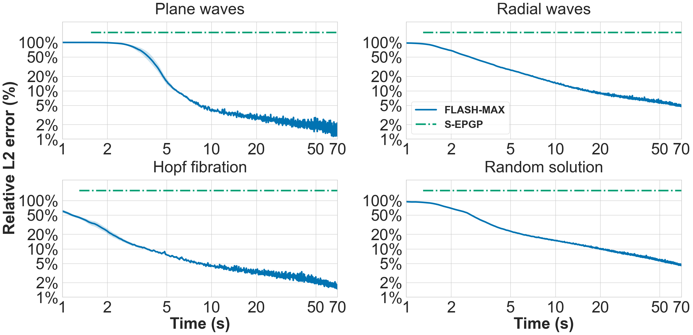
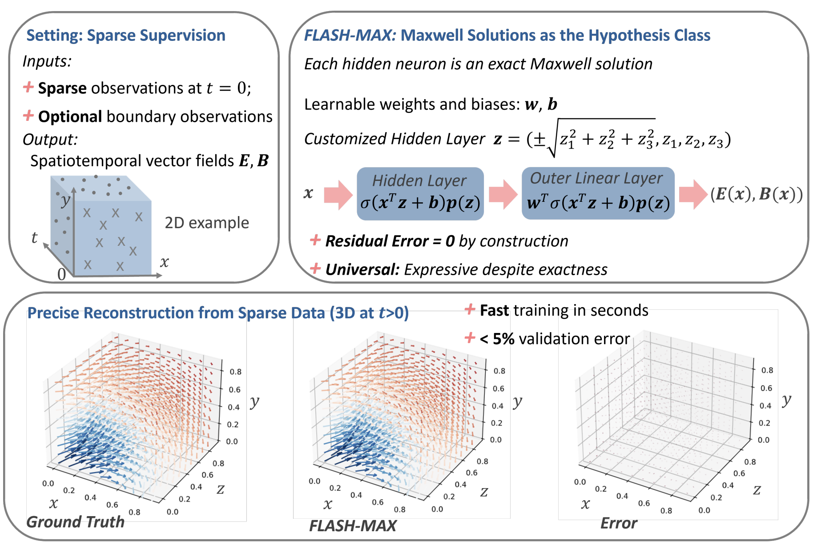

Fast Reconstruction of Exact Maxwell Dynamics from Sparse Data
1Department of Computer Science, Georgetown University 2Department of Mathematics, Georgetown University 3Department of Mathematics and Statistics, Old Dominion University 4School of Data Science, Old Dominion University 5Institute Industrial IT, Department of Computer Science and Automation, OWL University of Applied Sciences and Arts
NeurIPS 2026 Spotlight
Abstract
We introduce FLASH-MAX, a shallow, exact-by-construction neural network architecture for predicting homogeneous electromagnetic fields from sparse pointwise observations. Each hidden neuron represents a separate exact solution to Maxwell’s equations, so that the network satisfies the governing equations symbolically by construction and can be trained end-to-end from sparse data within seconds. We prove a universal approximation result showing that this exact model class remains universal on arbitrary domains. FLASH-MAX reaches sub-1% relative validation error from about 1K sparse pointwise observations in seconds, all while maintaining a zero PDE residual, and keeps single-digit errors even for only 100 observations sampled from 3D space. These results suggest that moving governing structure from the loss into the hypothesis class can dramatically improve the trade-off between precision and optimization speed in scientific machine learning.
Results
Both electric and magnetic fields as predicted by FLASH-MAX are nearly indistinguishable from the simulated ground-truth solutions.
Timing
We plot FLASH-MAX's relative error over time against 3 baselines (PINN, S-EPGP, FEM), plotting only points where the residual is reasonable (< 0.01). FLASH-MAX consistently outperforms all techniques by guaranteeing a zero residual while quickly and reliably achieving high accuracy across problems and setups. FEM does not appear as it cannot achieve a small residual this quickly.


Method

Citation
@inproceedings{degenaro2026flashmax,
title = {{Fast} {Reconstruction} of {Exact} {Maxwell} {Dynamics} from {Sparse} {Data}},
author = {{DeGenaro}, {Dan} and {Li}, {Xin} and {Amo}, {Obed} and {Pokojovy}, {Michael} and {Bargal}, {Sarah Adel} and {Lange-Hegermann}, Markus and {Raiţă}, Bogdan},
booktitle = {Advances in Neural Information Processing Systems},
year = {2026}
}